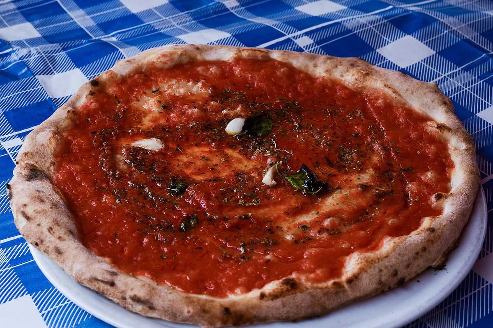
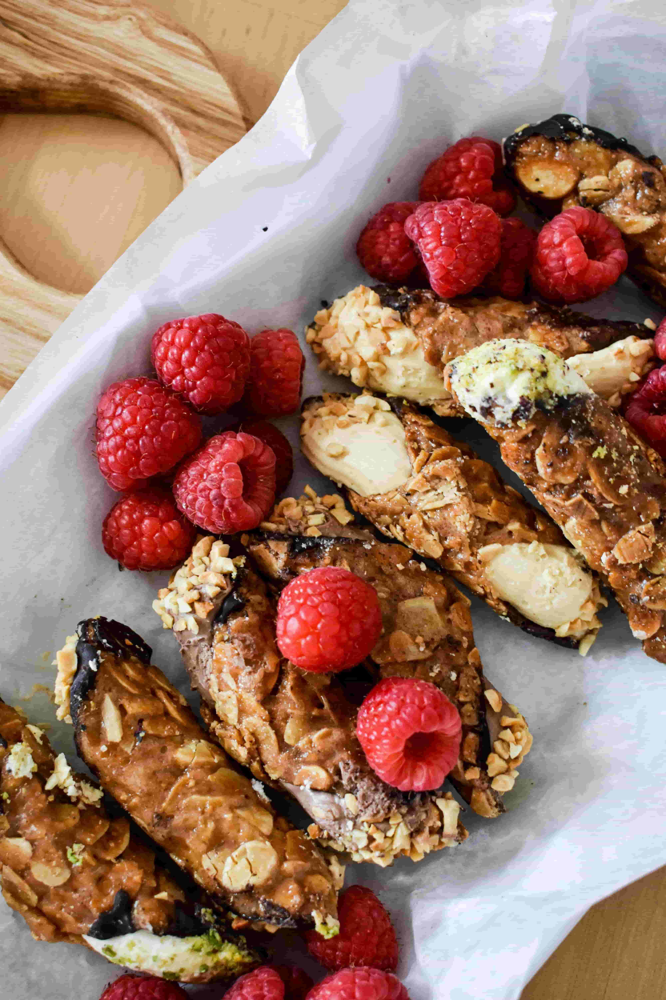

Our Pizzas
Margherita
A simple and classic pizza, with a base of tomato sauce, fresh mozzarella cheese, and basil leaves. It represents the colors of the Italian flag.

6.55€
Marinara
Topped with tomato sauce, garlic, oregano, and olive oil. It's one of the oldest pizza styles, originating in Napoli.
5.25€
Ortolana
A fresh and light pizza, topped with roasted seasonal vegetables like zucchini, peppers, eggplant, and mushrooms, often with a drizzle of olive oil.

8.99€
Napoletana
A classic from Napoli, typically topped with tomato sauce, mozzarella di bufala, anchovies, and capers.

7.55€
Our Desserts
Tiramisu
A rich dessert made with ladyfingers soaked in coffee, mascarpone cheese, cocoa powder, and a touch of coffee. It's light, creamy, and has a perfect balance of sweetness and bitterness.

6.99€
Cannoli
A crispy pastry tube filled with a sweetened ricotta cheese mixture. Sometimes they are garnished with chocolate chips, pistachios, or candied fruit at the ends. The shells are crunchy while the filling is smooth and creamy.
4.99€
Panna Cotta
Panna cotta is a silky, creamy dessert made from sweetened cream, milk, and gelatin. It's often served with fruit compote or caramel sauce. Its texture is delicate and smooth, and it has a mild, vanilla flavor.

5.99€